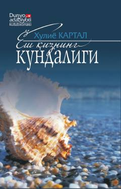

YQAtrof-muhit va inson hayotidagi kichik mo'jizalar haqidagi ta'sirchan mushohadalar kundaligi.
Mazkur kitob hayotning har bir lahzasidan zavqllanadigan, atrof-muhitdagi voqea-hodisalardan hikmat va go'zallik ko'ra oladigan ta'sirchan qalb egasining samimiy kechinmalari va o'ylari jamlangan kundalikdir. Muallif o'z kuzatishlari orqali o'quvchini tabiatdagi mo'jizalar, inson tanasining sir-asrorlari va shukronalik bilan yashash muhimligi haqida mushohada yuritishga undaydi. Kitob oddiygina kundalik qaydlar orqali qalbni poklash, yaxshilik va hayotning har bir daqiqasidan quvonch topishga chorlaydi.